Microsoft Azure
Microsoft Azure
Project DescriptionDescripción del Proyecto
This project was created to learn how to work with some of the services offered by Microsoft Azure. First, the required resource groups and services were created in Azure, such as App Service (to host the API) and SQL Server (to store the data). A REST API was built in Visual Studio with Bearer Token authentication. This project uses a tool called Dapper to simplify database queries. The goal is to publish directly from Visual Studio to Azure App Service.
Este proyecto fue creado con la intención de aprender a trabajar con algunos de los servicios que ofrece Microsoft Azure. Primero, se crearon los grupos de recursos y servicios necesarios en Azure, como el App Service (para alojar el API) y SQL Server (para guardar la información). Se creó un API REST en Visual Studio con autenticación mediante Bearer Token. En este desarrollo se utilizó una herramienta llamada Dapper para facilitar las consultas a la base de datos. El objetivo es poder realizar la publicación desde Visual Studio hacia Azure App Service.
Project LinksEnlaces del Proyecto
🔧 Creating the Azure ServicesCreación de Servicios en Azure
The App Service, SQL Server and SQL Database services are created from the Azure portal.
Se crean desde el portal de Azure los servicios de App Service, SQL Server y Base de Datos SQL.
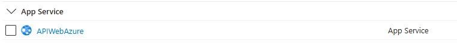
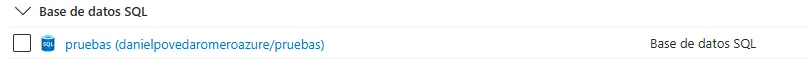
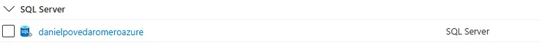
🔧 Building the APICreación del API
A REST API with Bearer Token authentication was built with .NET 8.0. This API exposes endpoints that interact with the SQL Database service.
Se desarrolló un API REST con autenticación Bearer Token utilizando .NET 8.0. Este API permite consumir sus endpoints e interactuar con el servicio de Base de Datos SQL.
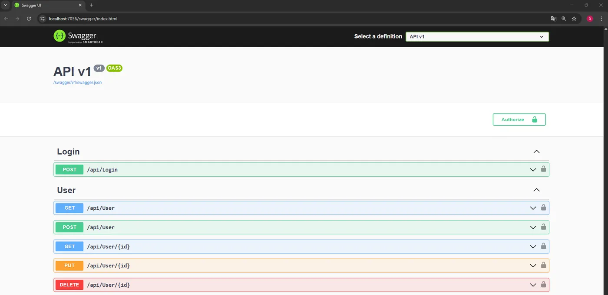
🔧 Publishing the API to Azure App ServicePublicación del API en App Service de Azure
Once local testing is done, we publish from Visual Studio. To do this, go to the "Publish" option in Visual Studio and select "Import Profile".
Una vez finalizadas las pruebas locales, se procede a realizar la publicación desde Visual Studio. Para esto, primero debemos ir a la opción "Publicar" en Visual Studio y seleccionar "Importar Perfil".
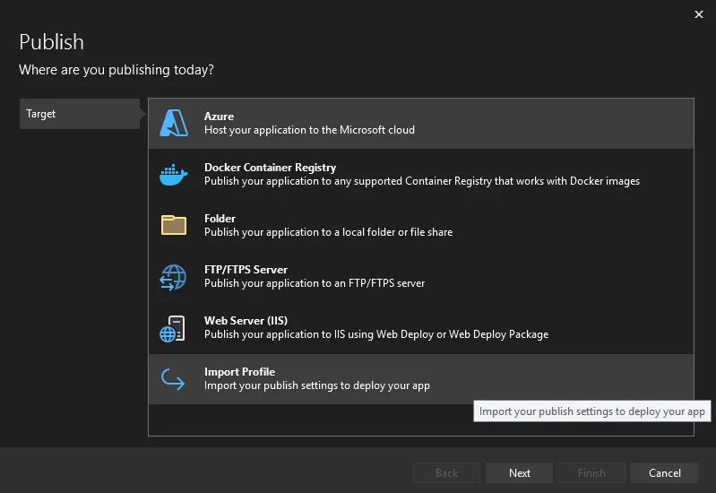
It will ask us to browse for a file to import.
Nos pedirá que busquemos un archivo para importarlo.
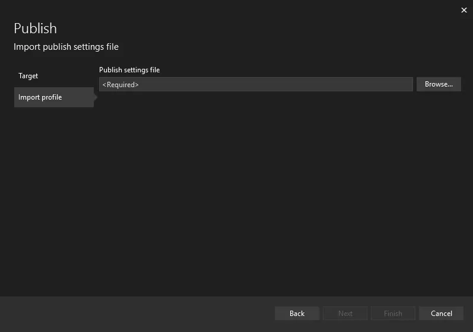
The file is downloaded from Azure by selecting the App Service we created and opening the Deployment Center option, then "Manage publish profile" and finally "Download publish profile".
El archivo se descarga desde Azure, seleccionando el App Service creado y abriendo la opción de implementación: Centro de Implementación, luego "Administrar perfil de publicación" y finalmente "Descargar perfil de publicación".
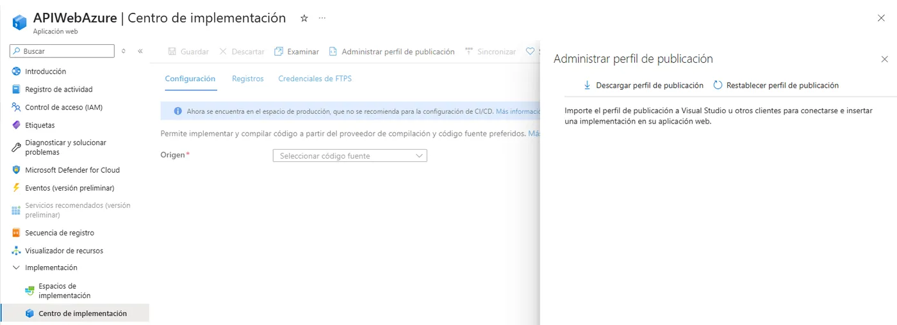
Visual Studio shows a screen confirming the file was loaded correctly, and we finish by clicking the "Publish" button.
Visual Studio nos mostrará una pantalla validando que el archivo se ha cargado correctamente y finalizamos dando clic en el botón "Publicar".
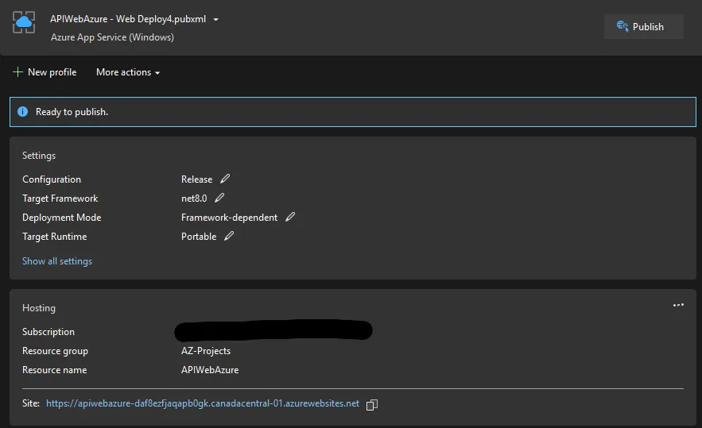
When it finishes, we can check our App Service and see the URL where our API is available.
Una vez finalizado, podremos revisar nuestro App Service y ver que nos da una URL en la cual podremos visualizar nuestro API.
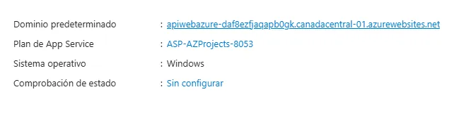
Simply add "/swagger" to the URL provided by Azure to use the API interface and call the endpoints.
Simplemente se debe agregar a la URL que nos da Azure "/swagger" para usar la interfaz del API y consumir los endpoints.
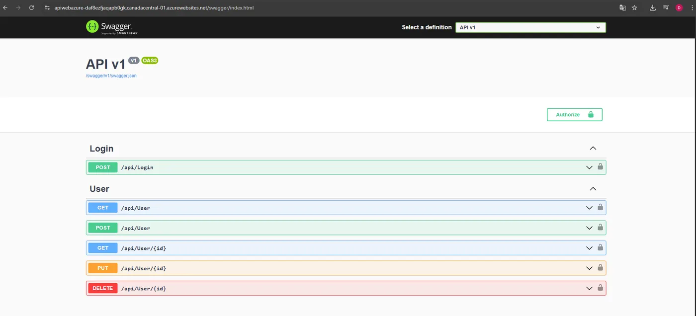
🔧 Calling the API EndpointsConsumir Endpoints del API
First we need to authenticate. To do so, we call the Login endpoint, whose response returns a Bearer Token.
Primero debemos autenticarnos. Para eso, consumimos el endpoint de Login, el cual en su respuesta nos dará un Bearer Token.
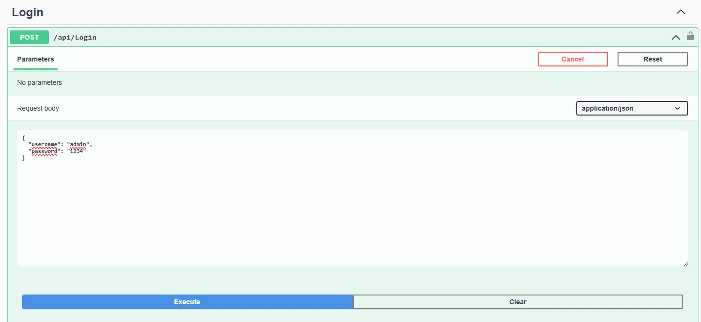
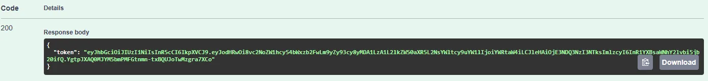
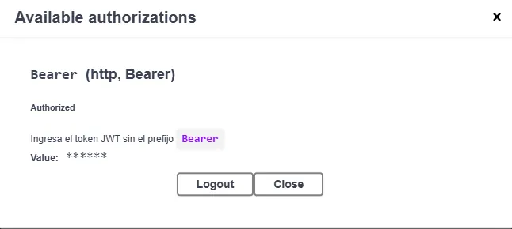
Once authorized, we use the POST method to create a new user.
Una vez autorizados, utilizaremos el método POST para crear un nuevo usuario.
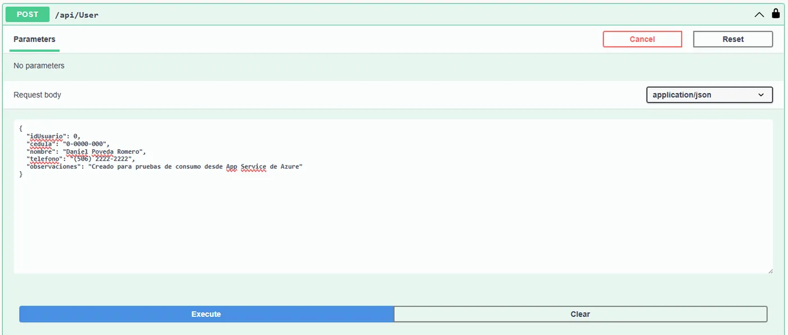
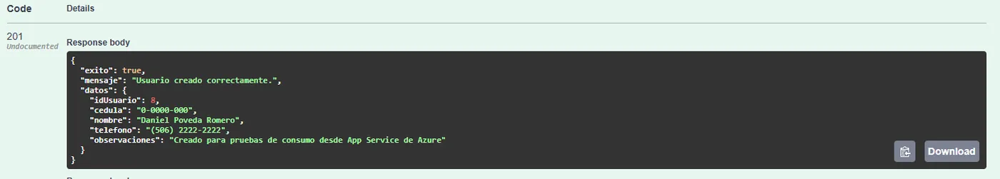
Now we use the GET method to retrieve all registered users.
Ahora utilizaremos el método GET para traer todos los usuarios registrados.
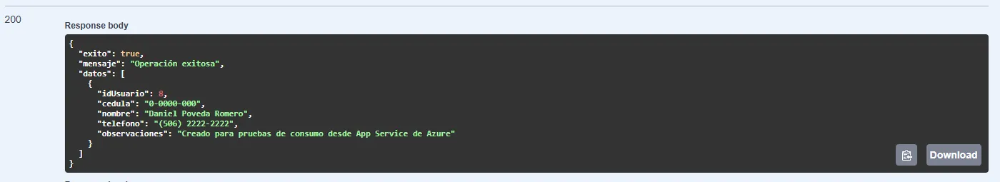
🔧 Using SQL Server Management StudioUso de SQL Server Management Studio
We use SQL Server Management Studio to connect to the Azure database, simply using the credentials we set when creating the SQL Server in Azure.
Utilizaremos SQL Server Management Studio para conectarnos con la base de datos de Azure. Simplemente usamos las credenciales con las que creamos el SQL Server en Azure.
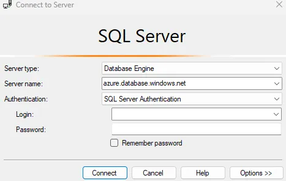
We can write queries to work with the databases in Azure.
Podremos crear consultas para usar las bases de datos en Azure.
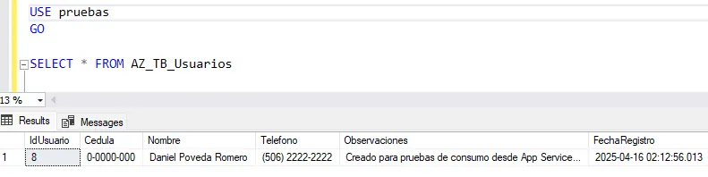